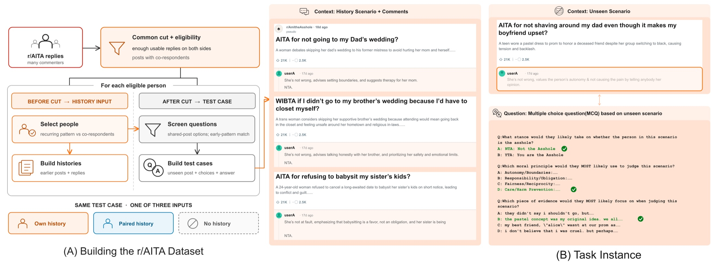

1Massachusetts Institute of Technology 2Northeastern University 3South China University of Technology 4Brown University 5McGill University 6University of Florida 7Harvard University
* equal contribution · Correspondence to: jiajie@mit.edu, qua@mit.edu
tl;dr Conversations online record the same people answering many situations, so they look like ready-made data for simulating individuals. But a reply mixes what anyone would say with what its author adds. Whom is a framework that builds individual simulation datasets and benchmarks around the individual signal: recurring patterns in a person’s replies that distinguish them from others in the same situations. We release benchmarks on r/AmItheAsshole, Wikipedia deletion debates, and news comments.
Finding Whose history a simulator reads matters more than whether it reads one. LLMs read a person’s lean and little else; a model trained on Whom data learns to use the person’s reasons. Results ↓
Language models are increasingly used to simulate people, from survey populations to particular individuals. For individuals, naturally occurring conversation has become the main material: it records the same people answering many situations over months. Benchmarks built from it give a simulator a person’s earlier replies and score how well it predicts their later ones.
A reply, however, records its situation as much as its author. A coat on a snowy day says little about the person wearing it, and most of a reply is what its post draws from anyone who answers. Reading any history moves a simulator’s accuracy by itself, down on r/AITA and up on Wikipedia debates, so part of the usual gain is not the person’s. That leaves open the question we address:
How can we reliably turn naturally occurring conversations into individual simulation datasets and benchmarks?
Psychology has long drawn three distinctions between what a situation draws from everyone and what a person brings to it. Most datasets and benchmarks built from conversation draw none of them.
Most of a reply is what its post draws from anyone. What its author adds shows only where others answer differently. Whom asks about a person only where co-respondents disagree.
A single difference may be a passing reaction. It belongs to the person only if it recurs. Whom keeps the people, and the parts of a reply, in which the difference recurs.
A simulator that knows how people in general answer can look accurate about everyone. Whom credits a gain to the person only when their own history beats someone else’s.
Let X be a situation, U the person who replies, and Y the category of one part of the reply, such as the position it takes or the reason it gives. The uncertainty in Y splits in three. Hover a term; the bars further down use the same colors.
We know U through the person’s history of earlier replies and take Y from their held-out later replies.
Conditioning on X makes the signal distinctive: it counts only what sets a person apart from the co-respondents, the others who answered the same situation. Taking Y from later replies makes it stable: only a difference that recurs from earlier to later replies survives the split. The answer a person’s history favors more than others do is their characteristic answer.
A benchmark credits a simulator with the person only if it removes what any respondent or any history would supply. It asks about situations on which co-respondents answer differently, and it gives the simulator three histories of the same size.

The r/AITA instance of Whom. Left: replies are split at one time cut, people are kept whose difference from their co-respondents recurs, and later replies on posts where co-respondents disagree become test cases. Right: a test case asks for the verdict, warrant, and evidence of a later reply the simulator does not see. Click to enlarge.
On Am I the Asshole?, many commenters judge the same post, every commenter reads the whole conflict, they often split, and they come back for months. Following Toulmin’s model of an argument, the claim of a reply is its verdict (NTA or YTA), its evidence is the part of the post it relies on, and its warrant is the principle that connects the two. Replies that share a verdict and the evidence can still differ in the warrant, which is where a person’s reasons show.
Two replies share the verdict and the evidence and differ in the warrant. The example is illustrative (Figure 3 of the paper).
Four principles are foundations of Moral Foundations Theory; the other six are obligations that r/AITA replies invoke. Hover one for its definition.
Three models from different families label each warrant; the label is the principle at least two choose. Two trained annotators agree on 94.6% of 112 replies (Gwet’s AC1 0.94). In a study with 44 participants, 78.6% of 103 self-coded explanations were rated as captured well by their principle, and on those the models’ majority label matches the participant’s code 77.1% of the time.
The signal is a property of the replies, so Whom measures it from labels alone, before any LLM is run. On r/AITA the post explains 29% of a verdict’s uncertainty and the person adds 8.0%; on the warrant the person adds 0.8% over all items and 7.9% on the characteristic items, so the item rules keep the replies in which the signal is concentrated. The evidence barely moves: the post fixes it. Someone else’s labels in place of the person’s make the prediction worse.
Shares of H(Y) (%) explained by the post (Situation) and added by the person’s early labels (Person), estimated as usable information; the rest is unexplained. Tables 7 and 21 of the paper.
Two real r/AITA commenters, two later replies each. Guess which principle each reply rests on: first from the post alone, then with the person’s 12 earlier replies. You can also swap in someone else’s history and see where it takes you. Posts and replies are paraphrased; the answers are the real labels. On the 769 warrant items, LLMs score 50–59% with no history and 54–63% with the person’s own.
Every LLM answers each question with no history, someone else’s, and the person’s own. With someone else’s history in place of none, the LLMs answer less accurately in eleven of the twelve LLM-by-part cells on verdicts and warrants, by up to 11.5 points. A gain over no history (Δadd) therefore understates the person’s gain, and misses it in three cells where Δmatch is significant. Watch the blue dot sit left of the hollow one.
Accuracy (%) on the r/AITA benchmark: 1,352 verdict, 769 warrant, and 554 evidence items, 12 earlier replies per history. Δmatch in points; †: positive and significant under sign and Wilcoxon tests over people (p < .05). Hover a row for the values. Tables 2, 6, and 20.
Common practice collects replies, groups them by commenter, and uses them as they are. Built that way at the same scale, the person’s own history never gains significantly over no history on verdicts and warrants, and only Qwen3-32B separates the person from someone else, on verdicts by 4.1 points. On the benchmark Whom builds, both LLMs gain significantly over someone else’s history on verdicts and warrants. A person becomes visible only where the benchmark asks about a difference that recurs.
Δmatch (points), own minus someone else’s history; † as above. Table 1.
With no history, the LLMs already reach 77–91% of the counting rule’s accuracy on verdicts: the post fixes most of the answer. With the person’s own history they recover 83–96% of what the labels predict on verdicts but only 70–82% on warrants. State the person’s own verdict in the question, and their history adds nothing significant on warrants. The records do hold the reasons:
We fine-tune Qwen3-8B with LoRA on the first 70% in time of the later replies of 100 people, in three versions: on all of these replies, on the ones that give the person’s characteristic answer (the Whom selection), or on as many drawn at random, and test on items that no version was trained on. Only the Whom selection teaches the model to use a person’s reasons: accuracy on warrants with the person’s own history rises from 47.4 to 70.0%. The model then follows the history it reads closely, so someone else’s history drags it down to 16.3%.
Accuracy (%) of Qwen3-8B on the test items with no history, someone else’s, and the person’s own (12 earlier replies), as per-person means; Δmatch and Δadd in points, † as above. Tables 3 and 16.
Now you are the person. Ten short conflicts, four reasons each; pick the one that matters most to you. Every principle is offered equally often, so someone with no pattern would land near 10% on each. At the end, Whom reads your characteristic answer and runs its split-half check on you. Nothing leaves your browser.
A source supports individual simulation only if several people answer each situation, all of them see the same situation, their answers differ, and the same people return over time. Wikipedia deletion debates and SOCC news comments meet these requirements and change what a reply is and where a person’s difference comes from. On all three, the signal lies in people’s positions and reasons.
Each benchmark file is JSONL, one item per line: {"id", "person", "messages", "answer"}. messages is the request with the person’s own history, exactly as it was sent; person is a pseudonym consistent within a source; answer is the correct letter in the request’s option order.
| File | Question | Items | People |
|---|---|---|---|
| aita_verdict.jsonl | r/AITA verdict (NTA / YTA) | 1,352 | 100 |
| aita_warrant.jsonl | r/AITA principle of the reply (4 options) | 769 | 100 |
| aita_evidence.jsonl | r/AITA part of the post the reply relies on (4 options) | 554 | 100 |
| afd_vote.jsonl | Wikipedia AfD: the editor’s vote (4 options) | 1,500 | 100 |
| afd_ground.jsonl | Wikipedia AfD: policy ground of the vote (12 options) | 1,708 | 50 |
| socc_claim.jsonl | SOCC: the article claim a comment engages | 1,375 | 100 |
| socc_stance.jsonl | SOCC: accepts / rejects / qualifies | 1,213 | 100 |
import json
from collections import defaultdict
items = [json.loads(l) for l in open("aita_warrant.jsonl")]
def score(items, predict):
# accuracy within each person, then averaged over people with at least 3 items;
# an unanswered item counts as wrong
per = defaultdict(list)
for it in items:
per[it["person"]].append(predict(it["messages"]) == it["answer"])
accs = [sum(v) / len(v) for v in per.values() if len(v) >= 3]
return 100 * sum(accs) / len(accs)
Run three conditions and report Δmatch = own − someone else’s. Own: the file as released. Someone else’s: replace the history block with another person’s from the same file, cut to the same length. None: remove the history block and use the no-history request given in the paper’s appendix. Count a gain only when it holds across people.
The files are for research on evaluating and training simulators of individuals. Do not try to re-identify the people behind them, and do not use the benchmarks to make decisions about them. Usernames, links, signatures, and e-mail addresses are replaced with placeholders. The texts come from public sources (Reddit r/AmItheAsshole, Wikipedia Articles for Deletion under CC BY-SA, and the SOCC corpus) and remain under their original terms. The examples on this page are paraphrased.
@misc{mo2026whom,
title = {Whom Are You Simulating? Building Individual Simulation
Benchmarks from Naturally Occurring Conversations},
author = {Mo, Zhenze and Li, Chance Jiajie and Hu, Kai and Qu, Ao
and Tang, Yuhan and Fan, Jie and Wu, Jiayi and Zhao, Kaiya Ivy
and Yu, Jiangbo and Zhuang, Dingyi and Wang, Shenhao
and Alonso Pastor, Luis Alberto and Jiang, Hang
and Larson, Kent and Zhao, Jinhua},
year = {2026}
}